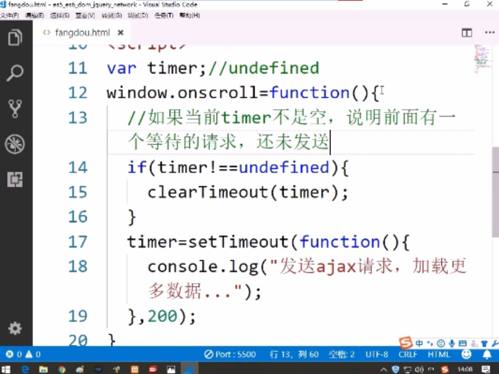
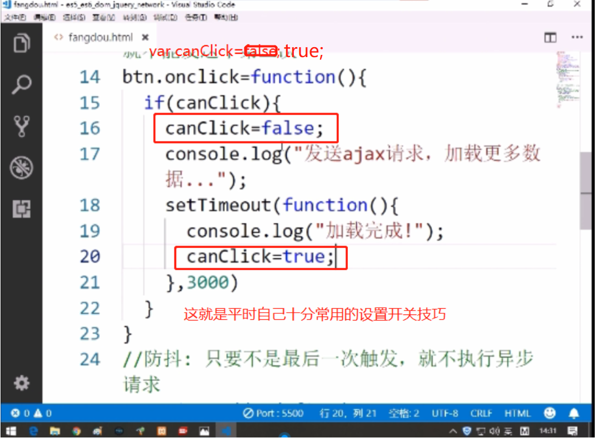

场景:刷新定时器 (1)每点击按钮执行定时器，之前如果有定时器存在，则清空，执行当前定时器 (2)如果之前没有定时器存在，则还是执行当前定时器 实现:如果定时器非undefined，则清空定时器，否则timer=定时器 
场景1 : 3秒以内点击无数次按钮，但函数只执行一次 场景2 : 3秒以鼠标滚动触发无数次事件，但函数只执行一次 实现：全局开关为true，点击时判断是否为true，是则让开关为false，然后再设置定时器函数(函数内让开关再次为true) 